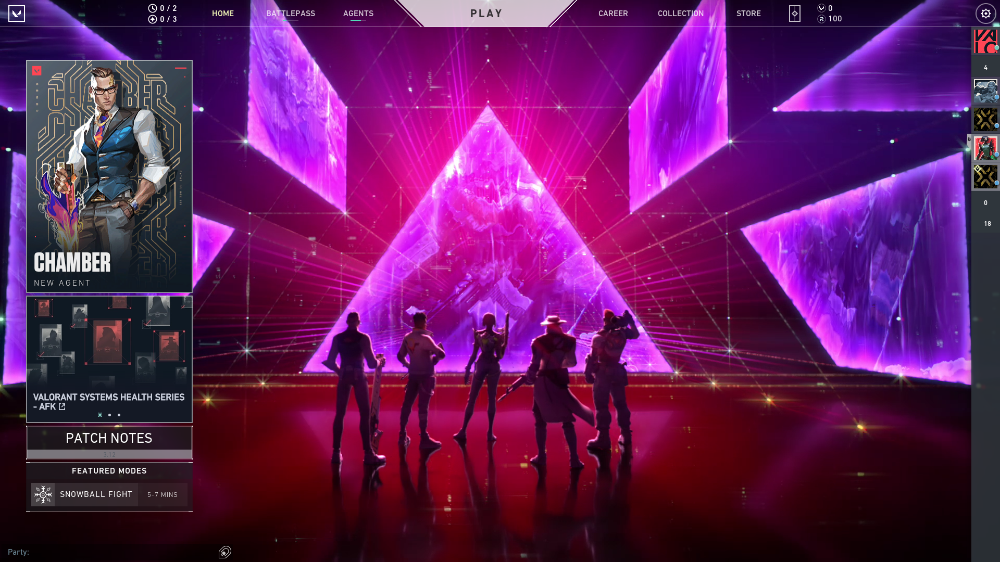
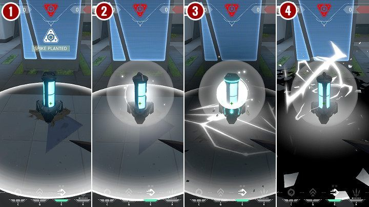
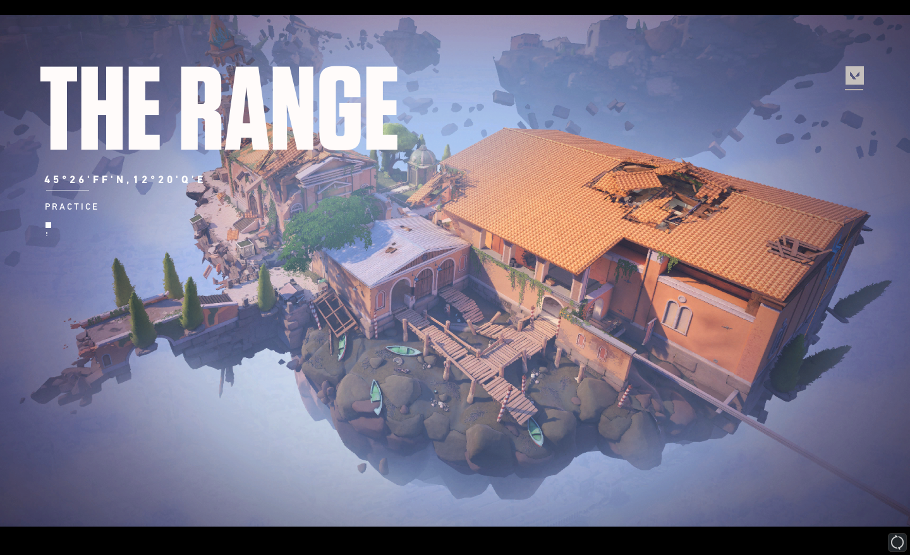
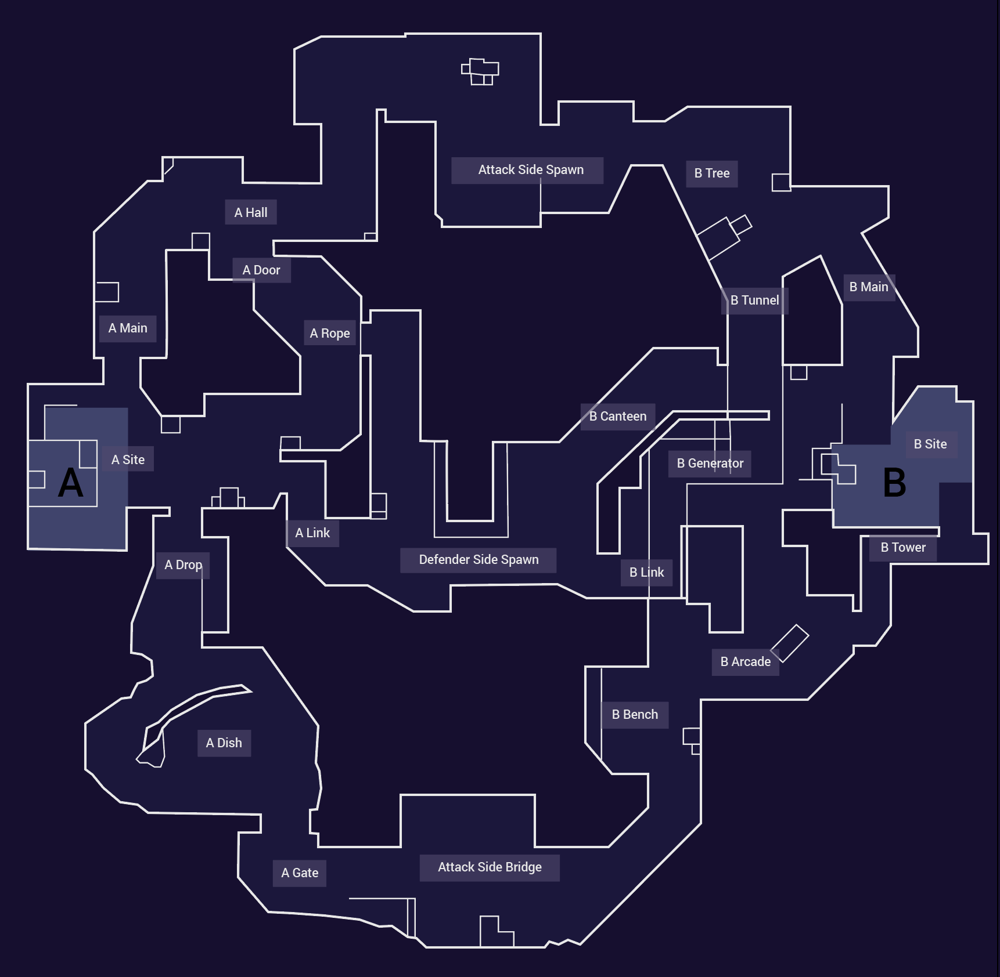
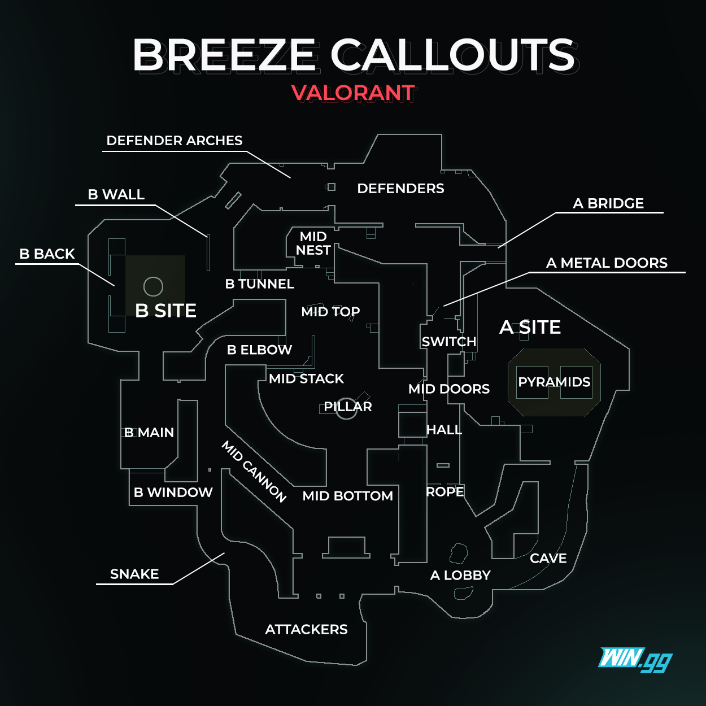
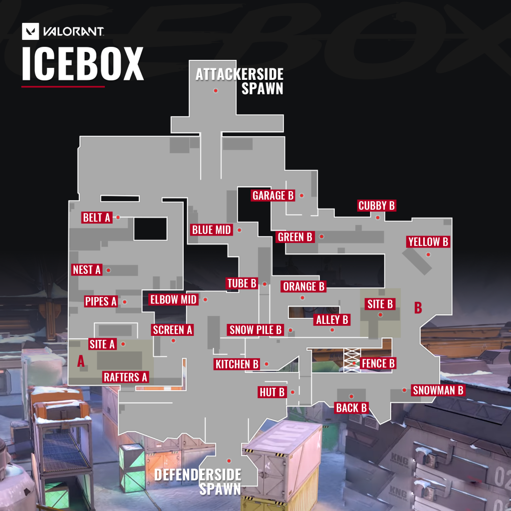
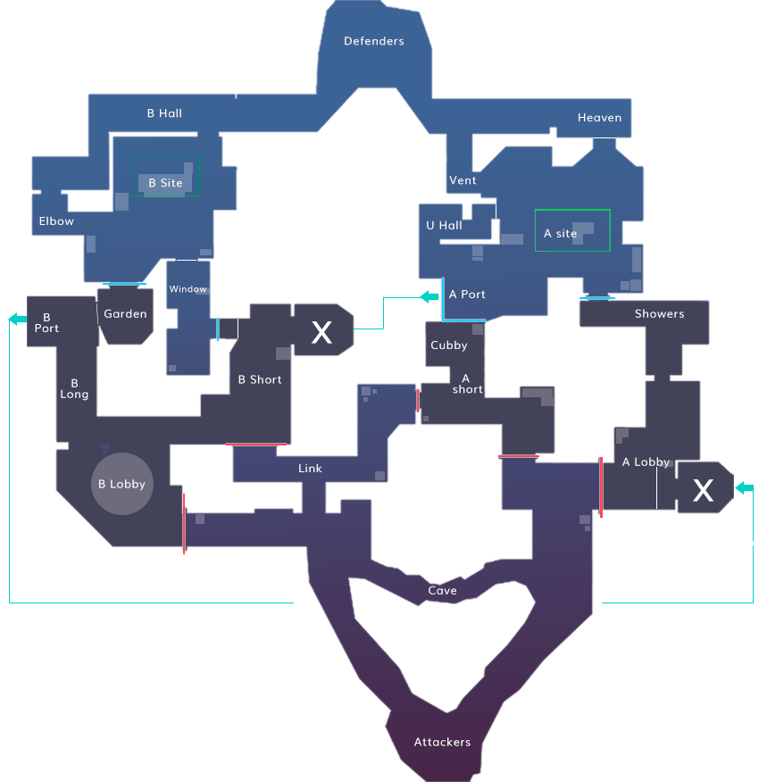
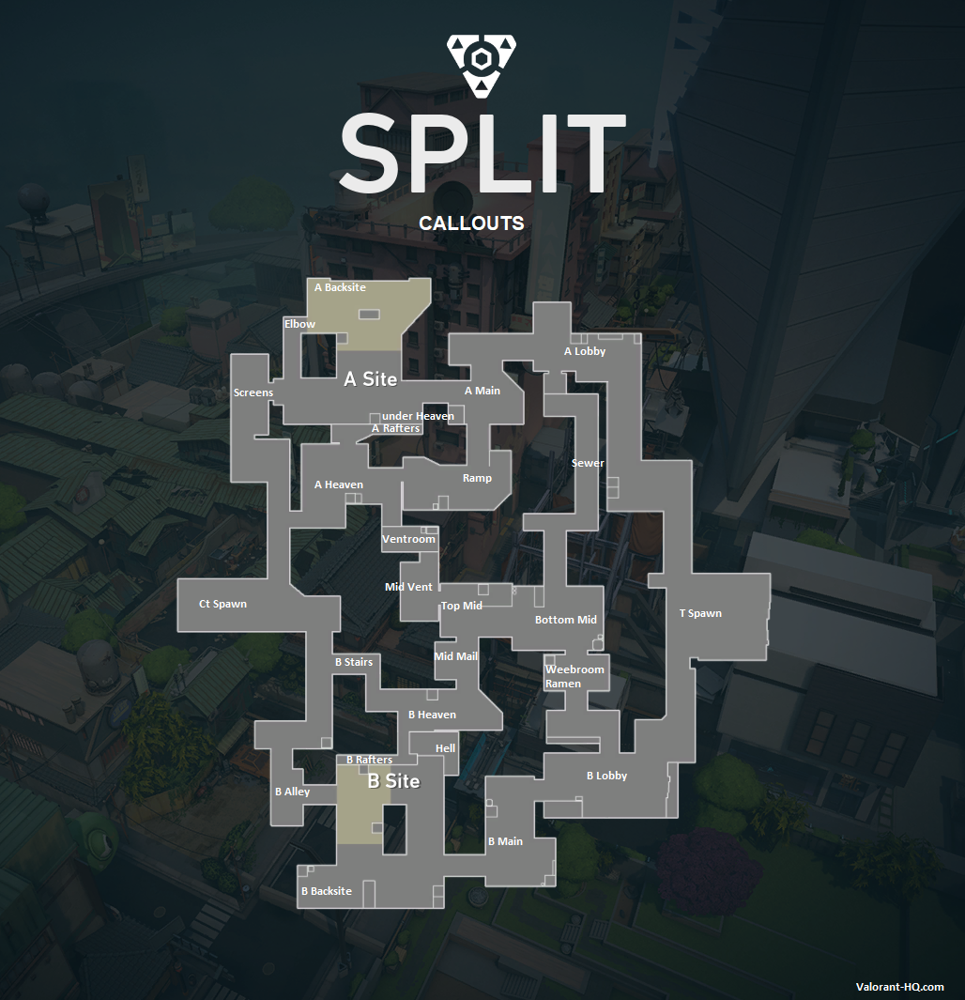
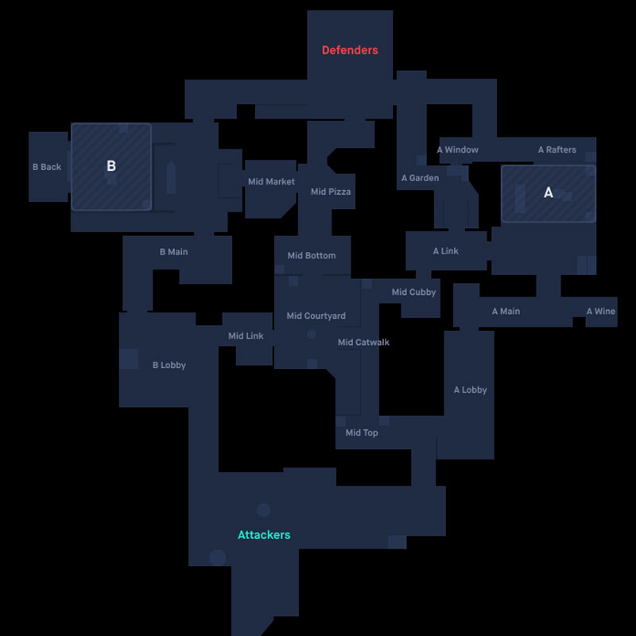

About
A 5v5 character-based tactical shooter game which made the social media and web portals go abuzz about it.
League of Legends developer Riot Games has been hard at work on its next desktop-exclusive multiplayer game, Valorant.
The game was originally announced in October 2019 as Project A, and League of Legends developer Riot Games officially announced it as Valorant a few months later. It's somewhat of a post-postmodern game, combining elements of Overwatch, Counter-Strike: Global Offensive, and, of course, League of Legends.
System Requirements
Riot Games, when developing Valorant, made sure that the game runs on the lowest of the lowest specification PCs. The development team behind Valorant spent a lot of time to make the game optimized enough for every type of PC.
When breaking down the requirements for any PC games, they are sub-grouped into three parts: minimum, recommended, and high-end specifications. All of these groups are created to give players an idea of how much system resources the game requires.
Below are all the specs requirements needed to play Valorant:
The Minimum Requirements are (for running Valorant at 30 FPS):
- CPU:Intel i3-370M
- RAM: 4 GB
- OS: Windows 7/8/10 64-bit
- VIDEO CARD: Intel HD 3000
The Reccommended requirements are (for running Valorant at 60 FPS):
- CPU: Core i5-4460
- RAM: 4 GB
- OS: Windows 7/8/10 64-bit
- VIDEO CARD: GTX 1050 Ti
High-end specification (for running Valorant at 144+ FPS):
- CPU: Intel i5-9400F/ Ryzen 5 2600X
- GPU: Nvidia Geforce GTX 1050Ti/ AMD Radeon R7 370
- VRAM: 1 GB
- RAM: 4 GB
- Storage: 20 GB
- OS: Windows 7,8,10 and 11(beta). (64-bit)
Current Home Screen

Game Modes
-
Plant/Defuse
-
Deathmatch
-
Practice Game Modes
Plant/Defuse

Plant/Defuse is a type of game mode where you play as an Attacker or a Defender. The Attacker's objective is to plant the spike or kill all living Defenders, while the Defender's objective is to prevent the Attacker to plant the spike (either by killing all living Attackers or preventing the Attackers from planting within the round time limit), or defuse the spike if it has already been planted (killing all living Attackers is not enough to win the round in this case). These modes are played in rounds where participants only have one life per round. Upon being killed, players must either wait for the next round to begin or be revived by Sage's Resurrection.png Resurrection to enter the battlefield again.
Most Plant/Defuse modes give access to a shop, where players can spend credits to obtain weapons, shields, and abilities.
- Unrated
Unrated is VALORANT's standard Plant/Defuse mode.
- Competitive
Competitive is a higher stakes version of Unrated where you play competitively against other players to earn and compete for a rank.
- Spike Rush
Spike Rush is a Bo7 5v5 mode where all players start each round with the same random weapon. Random orbs spawn around the map that players can collect to grant buff for themselves and/or their teammates or afflict enemies with debuffs.
- Replication
Replication is 5v5 Bo9 mode where all players on a team play as the same agent. Players vote for an agent they want to play and the game then randomly selects one of the choices.
Deathmatch
Deathmatch is a type of game mode where the objective is tied in some way to killing enemies. These modes can either be free-for-all or team based. Players have an infinite amount of lives and upon being killed will respawn at a random location after a short delay.
- Escalation
Escalation is a 5v5 team deathmatch mode where players kill and race the enemy team through a cycle of different weapons and abilities, advancing together as a team through Escalation levels. The first team to finish level 12, or the furthest along in 10 minutes, wins the game. Each level has a specific weapon or ability that the player is equipped with. Killing enemies grants points for the team that help to advance levels.
- Snowball Fight
Snowball Fight is a 5v5 team deathmatch mode where the first team to 50 kills wins. All players only have access to a Snowball Launcher that fires lethal projectile-based snowballs. Gifts also appear on the map that contain temporary power ups for the player. These can increase the launcher's rate of fire, increase snowball size, let snowballs ricochet, or increase the player's movement speed and max jump height.
Practice Game Modes
Practice Game Modes are a series of modes that you can play in the Range. These series of modes will let you have a taste of how VALORANT games will work.

- Shooting Test
Test your gun skills with a variety of shooting challenges.
- Spike Planting
Take control of the site, plant the Spike, and defend until detonation.
- Spike Defuse
Methodically defeat enemies and defuse the Spike before time runs out!
Maps
- Fracture
A top secret research facility split apart by a failed radianite experiment. With defender options as divided as the map, the choice is yours: meet the attackers on their own turf or batten down the hatches to weather the assault.

- Breeze
Take in the sights of historic ruins or seaside caves on this tropical paradise. But bring some cover. You'll need them for the wide open spaces and long range engagements. Watch your flanks and this will be a Breeze.

- Icebox
Your next battleground is a secret Kingdom excavation site overtaken by the arctic. The two plant sites protected by snow and metal require some horizontal finesse.

- Bind
Two sites. No middle. Gotta pick left or right. What's it going to be then? Both offer direct paths for attackers and a pair of one-way teleporters make it easier to flank.

- Haven
Beneath a forgotten monastery, a clamour emerges from rival Agents clashing to control three sites. There's more territory to control, but defenders can use the extra real estate for aggressive pushes.

- Split
If you want to go far, you'll have to go up. A pair of sites split by an elevated center allows for rapid movement using two rope ascenders. Each site is built with a looming tower vital for control.

- Ascent
An open playground for small wars of position and attrition divide two sites on Ascent. Each site can be fortified by irreversible bomb doors; once they're down, you'll have to destroy them or find another way.

Agents
The 17 agents available are broken down into four general roles. These roles are then broken down into more specialised positions such as Support, In-game Leader, Entry Fragger, Lurker, Recon, and Crowd Control. Each role is defined by the abilities the agent brings to the match. Click on the button to know about each of them in detail.